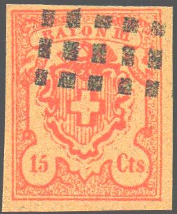
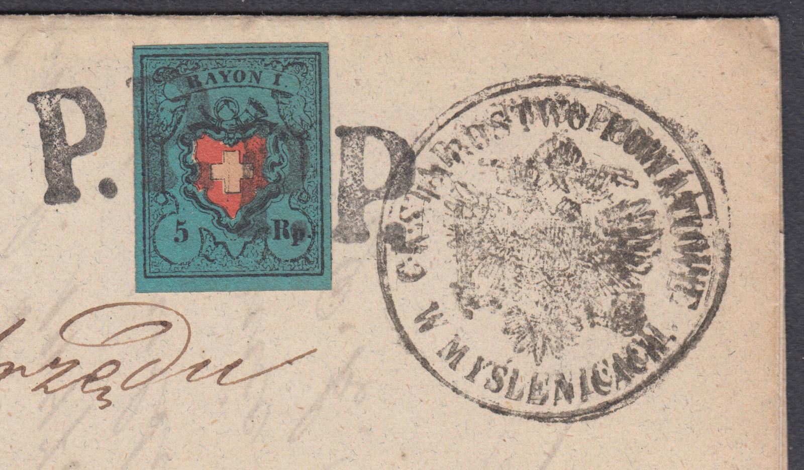
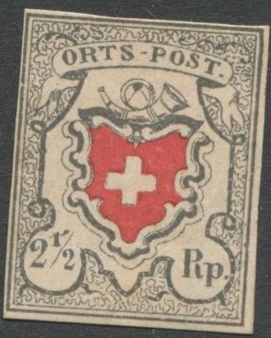
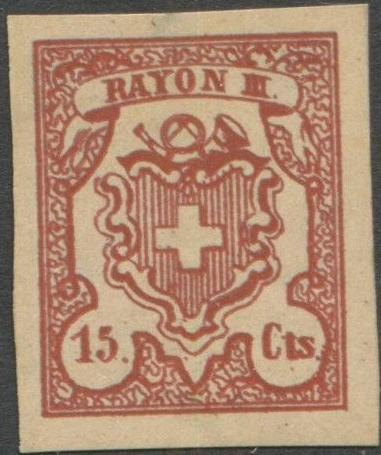

{kind=link}


Return To Catalogue - Switzerland overview - Switzerland issues from 1850-1853 - Forgeries of the 1850 issue, part 1 - Forgeries of the 1850 issue, part 3 (Sperati) - Forgeries of the 1850 issue, part 4 (Fournier) - Cancels on first federal issues - Types of the 1850 issue, part 1 - Types of the 1850 issue, part 2 - Issues form 1854-1881
Note: on my website many of the
pictures can not be seen! They are of course present in the
catalogue;
contact me if you want to purchase the catalogue.
Forgeries of the 1850 issue, part 1,
Switzerland forgeries of the 1850 issue,
part 3 (Sperati),
Switzerland forgeries of the 1850 issue,
part 4 (Fournier)
For typical cancels on first federal issues click here.
More examples of forged stamps:
Some primitive forgeries made by the forger Spiro:
Note the oblique shading of the posthorn in the above 15 cts forgeries (which is not present in the genuine stamps). These are the second forgeries described in 'Album Weeds' of the 15 cts stamp. I don't think the dots cancel on the first forgery or the line cancel on the second has ever been used in Switzerland. But, I have also seen a 'PP' cancel as the genuine cancels of Switzerland used on this Spiro forgery. Note that the curly rope enclosing the shield and value is hardly visible in this forgery, especially at the right hand side.


I think the above stamps are Spiro forgeries as well (note the strange cancels on some of them). I have been told that above the top-inscription, there are three typical ornaments, only visible in Spiro forgeries:

Probably Spiro forgeries as well:


Note that there is no dot behind 'ORTS-POST'. I've seen a whole sheet of 25 of the 'POSTE LOCALE' Spiro forgeries; the sheet was cancelled with 'PP', a pattern of 10 lines covering two or more stamps and a pattern of square dots (also covering more stamps).
Sheet with Spiro forgeries.

Another Spiro forgery, further enhanced with a 'normal' cancel to
disguise the fact that it is a Spiro forgery.
Peter Winter forgeries:
Peter Winter forgeries were made somewhere in the 1980's and are quite common. Usually, they have the word 'replik' written on the backside.


(Some modern Peter Winter forgeries, note the 'BOLL' cancel on
both stamps)


Bisected forgery on piece, note the wrong type "RAYON
I" in the colours of "RAYON II" and the other way
around.
I have also seen a uncancelled Peter Winter forgery of the 10 r value (with framed central cross, same type as the above stamp).
Other Winter 'products':


I've also seen these Winter forgeries with the following cancels:
2 1/2 r (ortspost, with or without black cross):
large red "P.P.";
large "PD" in an ellipse
pattern of lozenge-shaped dots
"WANGEN ??"
2 1/2 r (poste locale, with or without black cross):
Rosette cancel (in red) of Zurich(?)
"THIENGEN 17. AUG" in a double circle
5 r black blue and red (with or without black cross):
"CELERINA" in a straight line
Federal grille cancel
A bisected Winter forgery in the wrong colour, Rayon II black,
blue and red!


'Misprint's made by Peter Winter of the 5 r and 10 r in wrong
colors.

Winter forgery pasted on a letter.
A 'reprint' of the 2 1/2 rp stamp, made for the 'Salon der
Philatelie' in Hamburg in 1984 on a minisheet.

Zoom-in of this reproduction

A Menke-Huber postcard with replicas
of Geneva, Zurich
and Switzerland.
 
Cuts from such a Menke-Huber postcard,
in the 5 Rp, the red flowers can still be seen on the right hand
side.
{kind=link}
{kind=link}
{kind=link}